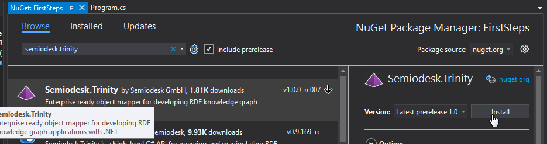
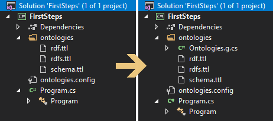

First Steps
The tutorial on this page should give you a first impression what you can do with Trinity RDF. If you follow the steps you will have a working application that already uses many features of the Semantic Web technology stack.
This example is a simple console application that creates and queries some data. In following examples we will show you how to do more advanced things.
Create Project
To get started we will open Visual Studio and create a new console project. You can name it how you want, we called ours 'FirstSteps'.
Now we can start to add the dependencies using NuGet. We add the Semiodesk.Trinity to the project.

This package contains the tools that are neccessary to create the object mapping. To get started with the configuration we have prepared a package with a configuration file and some basic ontologies.
Download the example project. It should look like this:  In the next section we will unpack what is happening here.
Manage Ontologies
You just added your first ontologies to your project. They are the basically the schemas for graph databases. They contain the descriptions and semantics of classes and properties of a domain. This is why they are also called vocabularies.
In contrast to relational databases you are not restricted to just one schema. The more ontologies you use, and the more you classify your data as instances of different ontologies the more precice the understanding of what your entities really are.
If you want some background information on ontologies, read this Wikipedia article.
In this example we're going to use the 'schema.org' ontology, or just schema in short.
Have a look in the configuration file ontologies.config to see how it is set up.
<ontology uri="http://schema.org/" prefix="schema">
<filesource location="ontologies/schema.ttl"/>
</ontology>
With this, we tell the framework where the ontology resides, which base URI it has and the namespace prefix we want to use. A namespace prefix is just a shorthand for the bulky URI.
When you build your project now, C# represenations of the ontologies will be created in the background. The code for this resides in ontologies/Ontologies.g.cs
Important: This is also the place to set the namespace of the generated code.
Create Mappings
Now we want to create our domain model which contains just an abstract Thing and a Person class.
using Semiodesk.Trinity;
using System;
namespace FirstSteps
{
[RdfClass(SCHEMA.Thing)]
public class Thing : Resource
{
[RdfProperty(SCHEMA.name)]
public string Name { get; set; }
public Thing(Uri uri) : base(uri) { }
}
}
The class needs to be derived from Resource. The mapping can simply be done by
decorating the class and the properties with the RDF classes and properties from the schema ontology.
Note: There is a distinction to be made between the generated 'schema' class and the upper case 'SCHEMA' class.
The upper case version provides the string representaion of the ontology elements and can be used in decorators
and attributes. The lower case variant provides Class and Property instances.
Now, let's create the Person class. It is derived
from Agent and has a property that models the relationship between a person and other people.
using Semiodesk.Trinity;
using System;
using System.Collections.ObjectModel;
using TrinityExample;
namespace FirstSteps
{
[RdfClass(SCHEMA.Person)]
public class Person : Thing
{
[RdfProperty(SCHEMA.givenName), NotifyPropertyChanged]
public string FirstName { get; set; }
[RdfProperty(SCHEMA.familyName), NotifyPropertyChanged]
public string LastName { get; set; }
[RdfProperty(SCHEMA.birthDate)]
public DateTime BirthDate { get; set; }
[RdfProperty(SCHEMA.knows)]
public ObservableCollection<Person> KnownPersons { get; set; }
public Person(Uri uri) : base(uri) {}
}
}
Database Connection
In this simple example we just rely on the built-in memory store.
Building the Application
Now we can start writing the application. First we need to let the framework know where to look for ontologies and our mapping. As it is the current assembly we can just call the convinence methods. Then we load a new memory store from the StoreFactory.
OntologyDiscovery.AddAssembly(Assembly.GetExecutingAssembly());
MappingDiscovery.RegisterCallingAssembly();
IStore store = StoreFactory.CreateStore("provider=dotnetrdf");
In the next step we get a handle to a model from the store. If no model exists, one is created automatically. The as name of the model we give a URI (Unique Resource Identifier). Note: A model in a graph database is a container for a set of resources that belong together logically.
Context = store.GetModel(new Uri("http://example.com/model"));
Then we can start to add our mapped objects to the model. First we let the model create a new
resource of type Person. In RDF resources are also identified by a URI. In contrast to URLs (Unique Resource Locator), URIs don't have to be resolvable.
So you can pick any domain you like and structure the URI how you want to, you could just use a GUID. In this example we are going for the more readable solution ("http://example.com/person/john").
After adding values to the resource we need to commit it to the model by calling the Commit() method.
Person john = Model.CreateResource<Person>(new Uri("http://example.com/person/john"));
john.FirstName = "John";
john.LastName = "Doe";
john.BirthDate = new DateTime(2010, 1, 1);
john.Commit();
Person alice = Model.CreateResource<Person>(new Uri("http://example.com/person/alice"));
alice.FirstName = "Alice";
alice.LastName = "Doe";
alice.BirthDate = new DateTime(2000, 1, 1);
alice.Commit();
To access the resources directly you can just call the Model.GetResource() method. You can provide a type here if you already know what the response will be like.
If you omit the type, it will return the object also as the appropriate type, but have to cast it manually.
Person alice2 = Model.GetResource<Person>(new Uri("http://example.com/person/alice"));
var john2 = Model.GetResource(new Uri("http://example.com/person/john")) as Person;
alice2.KnownPersons.Add(john2);
alice2.Commit();
john2.Commit();
To query from the model you can use the AsQueryable() method to build a LINQ query. In the following example we query for all person with a last name that starts with a "d".
var theDoeFamily = from person in Model.AsQueryable<Person>() where person.LastName.StartsWith("d", StringComparison.InvariantCultureIgnoreCase) select person;
foreach (var p in theDoeFamily)
Console.WriteLine($"Name: {p.FirstName} {p.LastName} Birthdate: {p.BirthDate}");
Finally we are going to delete the entities from our model. This can be done by just calling Model.DeleteResource() with the appropriate URI.
Model.DeleteResource(new Uri("http://example.com/person/alice"));
Model.DeleteResource(new Uri("http://example.com/person/john"));
Hopefully this small tutorial has given you a first overview of the possiblitiles that Trinity RDF offers.